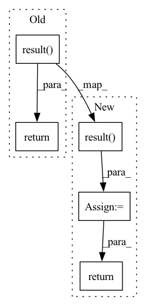

Pattern ID :33047

Before Change
labels, outputs = test_step(x)
metric.update_state(labels, outputs)
return metric.result()
def run(config):
strategy = get_distribution_strategy(config)
After Change
logger.info("Evaluating predictions...")
timer.tic()
result = metric.result()
timer.toc(average=False)
logger.info("Total time: {:.3f} sec".format(timer.total_time))
return result
def run(config):
In pattern: SUPERPATTERN
Frequency: 3
Non-data size: 5
Instances
Fragment ID: 95551639
Project Name: openvinotoolkit/nncf
Commit Name: 3b6847c25ecc2709775ded86736f1730e61ee20e
Time: 2021-02-04
Author: andrey.churkin@intel.com
File Name: beta/examples/tensorflow/object_detection/main.py
M Class Name: AnonimousClass
N Class Name: AnonimousClass
M Method Name: evaluate(5)
N Method Name: evaluate(3)
M Parent Class:
N Parent Class:
M File Name: beta/examples/tensorflow/object_detection/main.py
N File Name: beta/examples/tensorflow/object_detection/main.py
M Start Line: 225
M End Line: 229
N Start Line: 226
N End Line: 251
'>
Before Change
labels, outputs = test_step(x)
metric.update_state(labels, outputs)
return metric.result()
def create_test_step_fn(strategy, model, predict_post_process_fn):
Creates a distributed test step
After Change
logger.info("Evaluating predictions...")
timer.tic()
result = metric.result()
timer.toc(average=False)
logger.info("Total time: {:.3f} sec".format(timer.total_time))
return result
def create_test_step_fn(strategy, model, predict_post_process_fn):
'>
Fragment ID: 95551640
Project Name: openvinotoolkit/nncf
Commit Name: 3b6847c25ecc2709775ded86736f1730e61ee20e
Time: 2021-02-04
Author: andrey.churkin@intel.com
File Name: beta/examples/tensorflow/segmentation/evaluation.py
M Class Name: AnonimousClass
N Class Name: AnonimousClass
M Method Name: evaluate(5)
N Method Name: evaluate(3)
M Parent Class:
N Parent Class:
M File Name: beta/examples/tensorflow/segmentation/evaluation.py
N File Name: beta/examples/tensorflow/segmentation/evaluation.py
M Start Line: 121
M End Line: 125
N Start Line: 119
N End Line: 144
'>
Before Change
for name, param in self.model.named_parameters():
self.writer.add_histogram(name, param, bins="auto")
return self.valid_metrics.result()
def _progress(self, batch_idx):
ratio = "[{}/{} ({:.0f}%)]"
return ratio.format(batch_idx, self.len_epoch, 100.0 * batch_idx / self.len_epoch)
After Change
for name, param in self.model.named_parameters():
self.writer.add_histogram(name, param, bins="auto")
valid_log = self.valid_metrics.result()
return valid_log
def _progress(self, batch_idx):
ratio = "[{}/{} ({:.0f}%)]"
'>
Fragment ID: 95551641
Project Name: deeperlearner/pytorch-template
Commit Name: 662aa3e639fc5ff861fc47d269afc1fcd379973d
Time: 2021-01-31
Author: b04202035@g.ntu.edu.tw
File Name: trainer/trainer.py
M Class Name: Trainer
N Class Name: Trainer
M Method Name: _valid_epoch(2)
N Method Name: _valid_epoch(2)
M Parent Class: BaseTrainer
N Parent Class: BaseTrainer
M File Name: trainer/trainer.py
N File Name: trainer/trainer.py
M Start Line: 108
M End Line: 121
N Start Line: 111
N End Line: 134